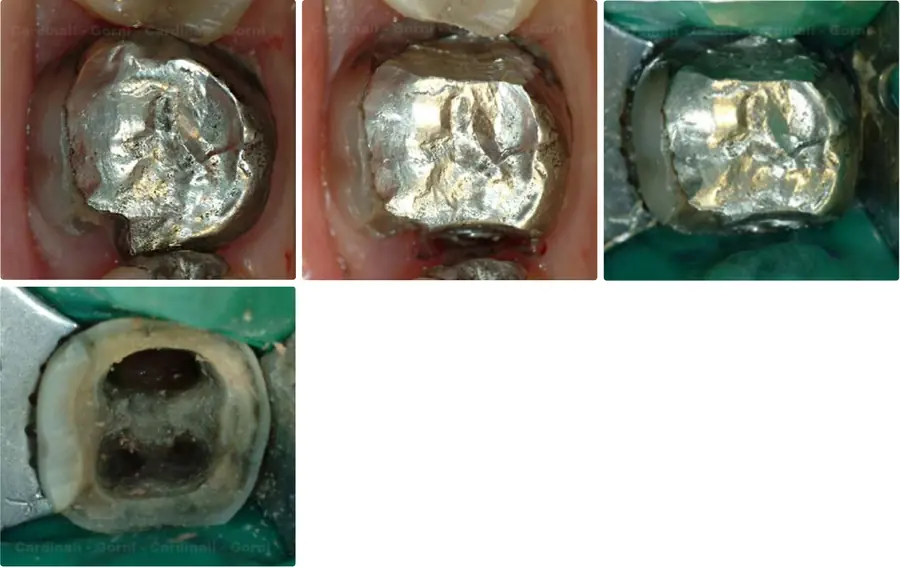
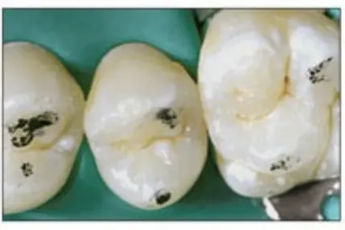

نسخه استخراجشده؛ ترجمه یا تأیید علمی انجام نشده است. وضعیت: captured
برای ترمیم کلاس II پرمولر دوم بالا، دانشجو ورق را با نخ دندان به تماس مزیال پرمولر اول برد که ترمیم آمالگام قدیمی دارد. ورق همانجا گیر کرد و پاره شد. کدام کار پیش از رابردم جا افتاده بود؟

پیش از گذاشتن رابردم، نخ دندان را از همهی تماسهایی که ورق باید از آنها بگذرد رد کن. اگر این کار روال همیشگیات شود، وقت زیادی نجات میدهد.
مانع تماس بهانهی نگذاشتن رابردم نیست؛ در درمان ریشهی تکدندان، درز تماس دشوار را با لیکوئید دم میبندی (درس ۴).
اشتباه رایج: چرب کردن ورق با وازلین یا کرهی کاکائو. اینها روغنیاند و با آب از ورق و دندان شسته نمیشوند؛ چسبندگی باندینگ را کم میکنند و اینورت کردن ورق را سخت.

جای درست وازلین و کرهی کاکائو لبها و گوشههای دهان است. آنها را پیش از گذاشتن رابردم چرب کن تا ورق و فریم تحریکشان نکنند.
اگر ترمیم سطح اکلوزال را درگیر میکند، تماسهای اکلوزالی بیمار را پیش از رابردم با کاغذ آرتیکولاسیون علامت بزن. گذاشتن رابردم این علامتها را پاک میکند؛ برای نگه داشتنشان، رزین شفاف نوری یا وارنیش را کنار علامت بگذار تا روی آن جاری شود، بعد کیور کن.
ورق و دندانها را با اسپری آب و هوا بشوی تا لوبریکانت برود، بعد با هوا خشک کن.